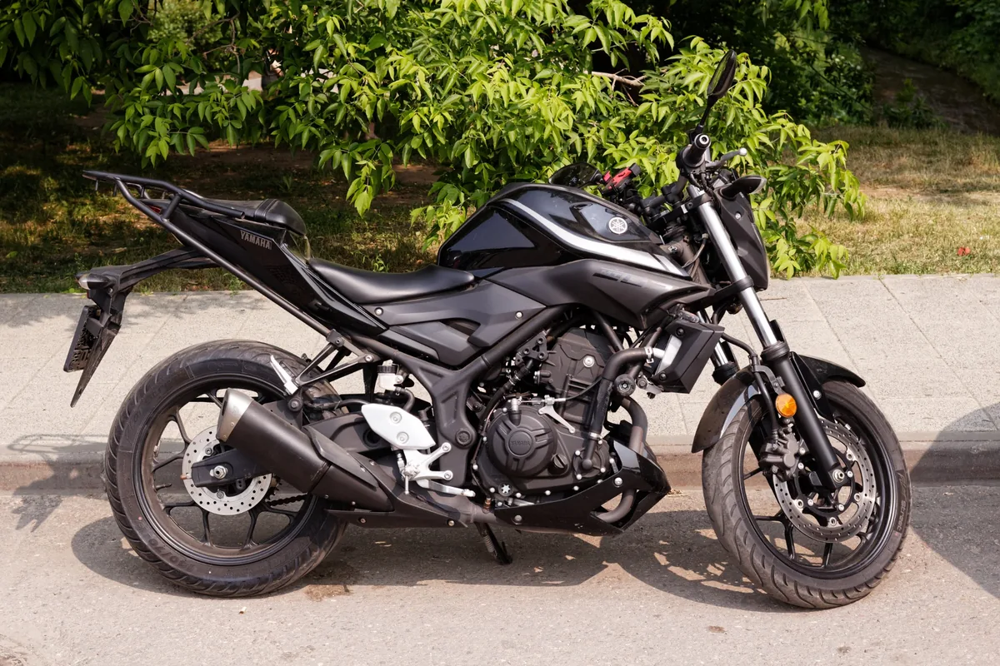
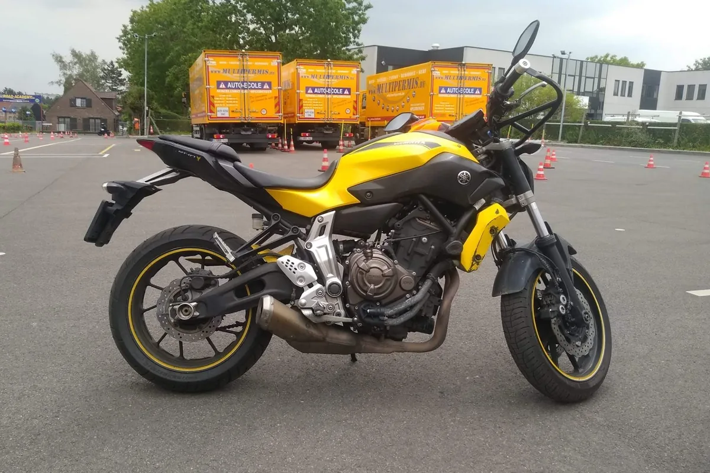
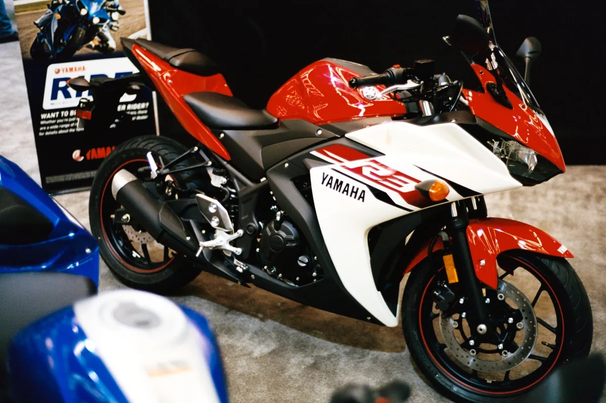
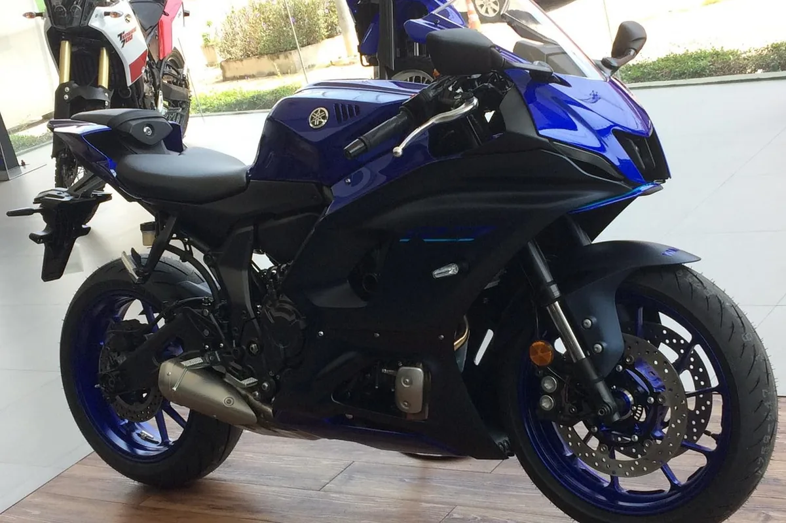
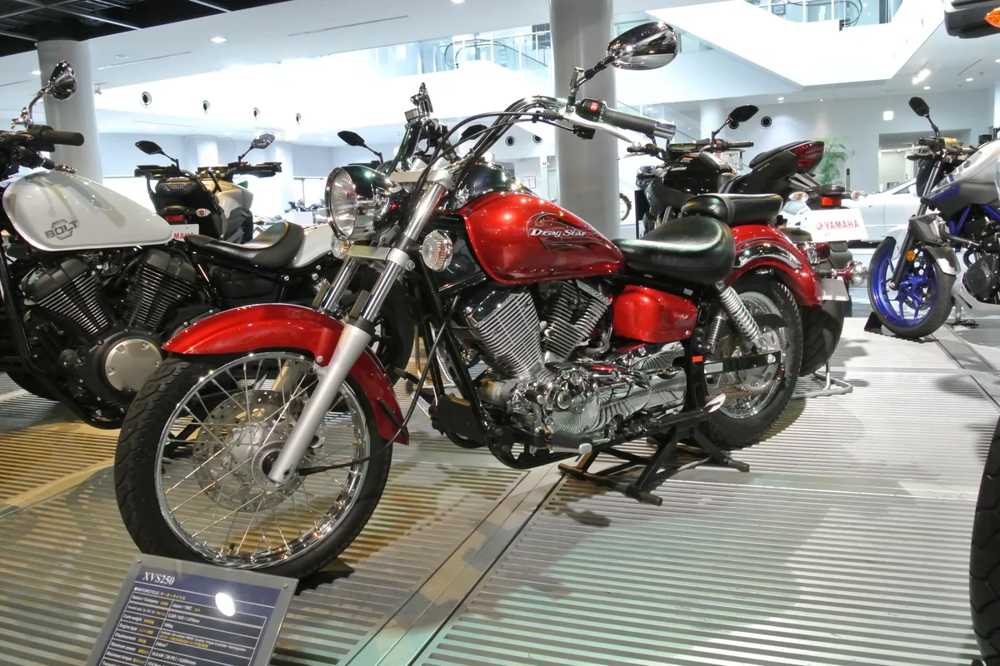
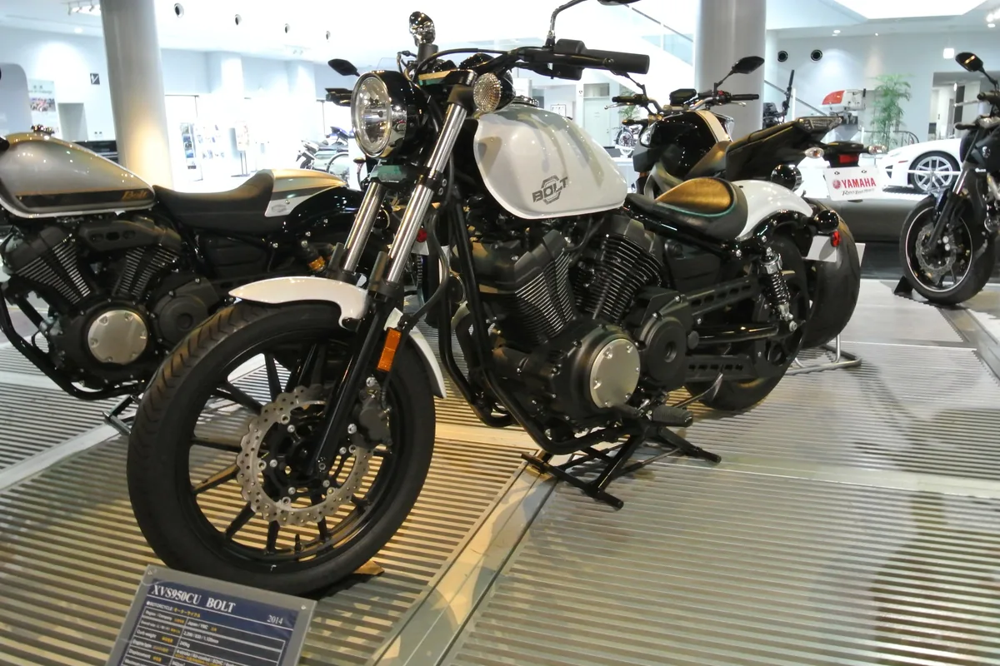
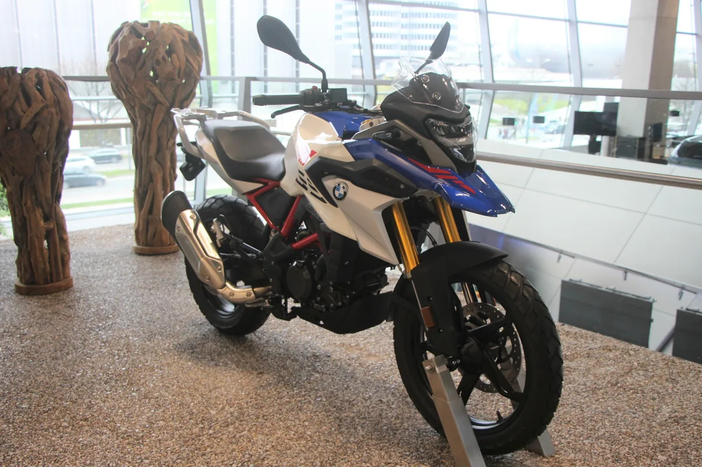
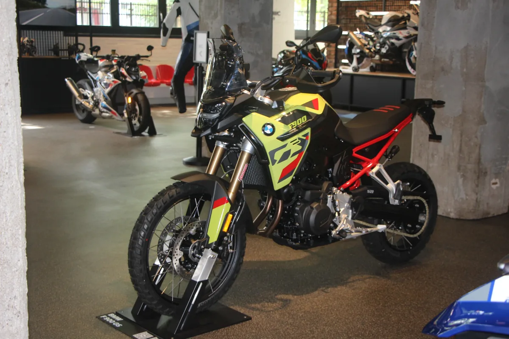
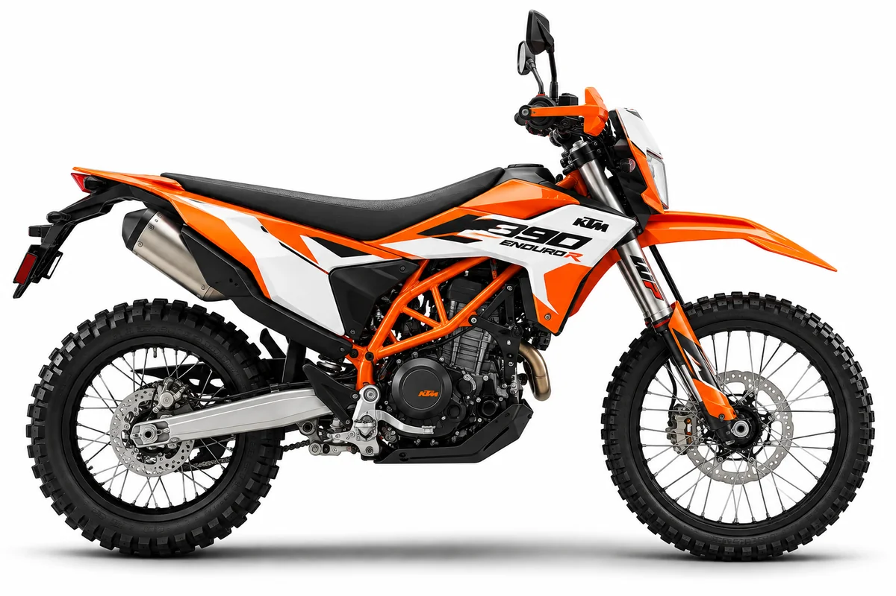
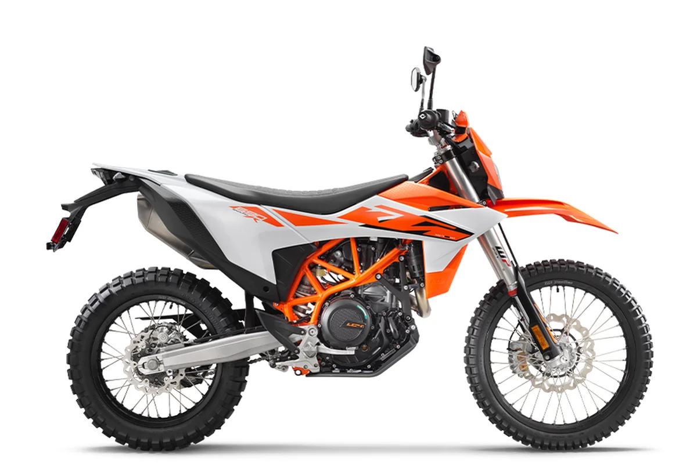

Choosing Your Ride
There is no single motorcycle that is right for every rider. Motorcycles are built for different purposes, riding styles, and priorities. Before choosing a specific bike, start by figuring out what kind of riding you actually want to do.
The right motorcycle depends on where you are in your riding journey. A first motorcycle may prioritize learning and confidence, while a later motorcycle may focus more on performance, comfort, technology, or a different style of riding.
1ST RIDE
Choosing Your First Motorcycle
Your first motorcycle is a tool for learning. It should give you the opportunity to practice low-speed control, braking, cornering, and the everyday skills that make riding feel natural.
Start by looking at the type of riding you want to do. Naked, sport, cruiser, adventure, and dual-sport motorcycles can offer very different riding experiences even when they are all reasonable motorcycles to consider early in your riding career.
Explore First-Ride CategoriesWhat Kind of Riding Sounds Like You?
Motorcycle categories are not strict rules, but they can help narrow down your search. Some riders prioritize performance, some comfort, some long-distance travel, and others want a motorcycle that can leave the pavement entirely.
Start with the type of riding that interests you. Once you understand the categories, you can begin comparing individual motorcycles within them.
Naked / Standard
Naked and standard motorcycles usually combine an upright riding position with relatively simple bodywork. They can work well for commuting, everyday riding, and learning the fundamentals without committing to a more specialized style of motorcycle.
Explore Naked / Standard BikesSport
Sport motorcycles place more emphasis on handling, aerodynamics, and performance. Smaller sport bikes can provide the appearance and riding style that attracts many riders to the category while offering a more approachable place to develop riding skills.
Explore Sport BikesCruiser
Cruisers typically feature lower seat heights, relaxed riding positions, and styling that emphasizes the motorcycle's engine and chassis. Their low seats can appeal to riders who want more confidence reaching the ground, although weight and handling should still be considered.
Explore CruisersAdventure
Adventure motorcycles are designed around versatility. Their upright ergonomics, longer suspension travel, and ability to carry luggage can make them useful for commuting, touring, and exploring roads beyond a rider's normal route.
Explore Adventure BikesDual-Sport
Dual-sport motorcycles combine street-legal equipment with off-road capability. They are often relatively light and simple, making them useful for riders who want to learn on pavement while also having the option to explore dirt roads and trails.
Explore Dual-Sport BikesNaked / Standard Motorcycles
Naked and standard motorcycles can make practical first rides because they often combine upright ergonomics, relatively low weight, and everyday usability. The examples below show how a rider can start with a more approachable motorcycle and later move to a larger motorcycle within the same general category.


| Your 1st Naked | Engine | Weight | Base MSRP | Turn It Up | Engine | Weight | Base MSRP | |
|---|---|---|---|---|---|---|---|---|
| Yamaha MT-03 | 321cc | 373 lb | $4,999 | → | Yamaha MT-07 | 689cc | 403 lb | $8,599 |
| Kawasaki Z500 ABS | 451cc | 368 lb | $5,699 | → | Kawasaki Z650 S ABS | 649cc | 419 lb | $7,699 |
| Honda CB500 Hornet | 471cc | 414 lb | $5,899 | → | Honda CB750 Hornet E-Clutch | 755cc | 432 lb | $7,999 |
| Ducati Scrambler Icon Dark | 803cc | 388 lb | $9,995 | → | Ducati Monster | 890cc | 386 lb | $13,295 |
Sport Motorcycles
Sport motorcycles emphasize handling, aerodynamics, and performance, but that does not mean every sport bike is a superbike. Smaller sport motorcycles can provide sporty styling and responsive handling while remaining approachable for riders who are still developing their skills. Moving up can add performance without immediately jumping to a superbike.


| Your 1st Sport | Engine | Weight | Base MSRP | Pick Up the Pace | Engine | Weight | Base MSRP | |
|---|---|---|---|---|---|---|---|---|
| Yamaha YZF-R3 | 321cc | 373 lb | $5,499 | → | Yamaha YZF-R7 | 689cc | 414 lb | $9,399 |
| Kawasaki Ninja 500 ABS | 451cc | 377.1 lb | $5,799 | → | Kawasaki Ninja 650 ABS | 649cc | 423 lb | $8,199 |
| Honda CBR500R | 471cc | 421 lb | $6,399 | → | Honda CBR650R E-Clutch | 649cc | 466 lb | $9,199 |
| → | Ducati Panigale V2 | 890cc | 395 lb | $16,995 |
Cruiser Motorcycles
Cruisers generally combine low seat heights with relaxed ergonomics and distinctive styling. A low seat can make reaching the ground easier, but new riders should still consider the motorcycle's overall weight, handling, and riding position. Moving up in the cruiser category can bring more power, size, and long-distance capability.


| Your 1st Cruiser | Engine | Weight | Base MSRP | Go Bigger | Engine | Weight | Base MSRP | |
|---|---|---|---|---|---|---|---|---|
| Honda Rebel 500 | 471cc | 414 lb | $6,799 | → | Honda Rebel 1100 | 1084cc | 497 lb | $9,699 |
| Kawasaki Eliminator ABS | 451cc | 388.1 lb | $6,799 | → | Kawasaki Vulcan S ABS | 649cc | 498.3 lb | $8,149 |
| Yamaha V Star 250 | 249cc | 324 lb | $4,799 | → | Yamaha Bolt R-Spec | 942cc | 542 lb | $8,999 |
Adventure Motorcycles
Adventure motorcycles combine upright ergonomics with longer-travel suspension and features intended for exploring beyond ordinary street riding. New riders should pay particular attention to seat height and weight because adventure motorcycles are often taller than comparable street bikes. As experience grows, larger adventure motorcycles can open the door to longer trips and more demanding terrain.


| Your 1st Adventure | Engine | Weight | Base MSRP | Go Further | Engine | Weight | Base MSRP | |
|---|---|---|---|---|---|---|---|---|
| KTM 390 Adventure R | 398.7cc | 388 lb | $7,699 | → | KTM 890 Adventure R | 889cc | 474 lb | $16,299 |
| Honda NX500 | 471cc | 432 lb | $6,899 | → | Honda Transalp E-Clutch | 755cc | 468 lb | $10,199 |
| BMW G 310 GS | 313cc | 386 lb | $5,895 | → | BMW F 900 GS | 895cc | 482 lb | $14,395 |
Dual-Sport Motorcycles
Dual-sport motorcycles are designed to operate both on public roads and away from pavement. Their relatively low weight can make them appealing learning tools, although their off-road design often results in considerably taller seat heights than street motorcycles. Moving up can bring more power and capability while keeping the ability to leave the pavement behind.


| Your 1st Dual-Sport | Engine | Weight | Base MSRP | Get Dirtier | Engine | Weight | Base MSRP | |
|---|---|---|---|---|---|---|---|---|
| Honda CRF300L | 286cc | 311 lb | $5,749 | → | Honda XR650L | 644cc | 346 lb | $6,999 |
| Kawasaki KLX230 S ABS | 233cc | 293.3 lb | $5,499 | → | Kawasaki KLX300 | 292cc | 302.1 lb | $5,649 |
| KTM 390 Enduro R | 398.7cc | 364 lb | $6,049 | → | KTM 690 Enduro R | 692.7cc | 357 lb | $13,399 |